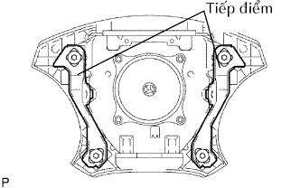

MẶT VÔ LĂNG > KIỂM TRA TRÊN XE |
| 1. KIỂM TRA CỤM MẶT VÔLĂNG (XE KHÔNG BỊ TAI NẠN VÀ TÚI KHÍ KHÔNG PHÁT NỔ) |
Thực hiện kiểm tra hệ thống chẩn đoán (Xem trang Kích chuột vào đây).
Với mặt vôlăng (có túi khí) lắp trên xe, hãy thực hiện kiểm tra bằng quan sát:
| 2. KIỂM TRA CỤM MẶT VÔLĂNG (XE BỊ TAI NẠN VÀ TÚI KHÍ KHÔNG PHÁT NỔ) |
 |
Thực hiện kiểm tra hệ thống chẩn đoán (Xem trang Kích chuột vào đây).
Với mặt vôlăng (có túi khí) tháo ra khỏi xe, hãy thực hiện kiểm tra bằng quan sát:
|  |
 |